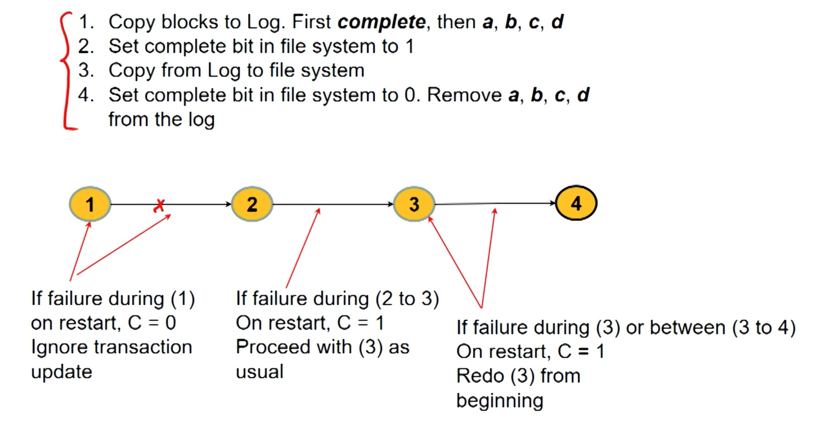

Suppose a write system call wants to modify 4 blocks (a,b,c,d) where block a is the file’s FCB, block b is the corresponding directory, c and d are the file data. What happens if the system crashes after a and b are written?
Files system state becomes inconsistent as block a indicates that there exists a directory entry for the file and block b indicates that the file should be present but the file is not present ⇒ Recovery
Consistency checking: scan all data on directory and compare with data in each block to determine consistency. However this slow, may not always successfully repair and may require human intervention to resolve conflicts. (Old)
Journaling File Systems (JFS): use log based recovery techniques. When a (write) system call is invoked, all metadata changes are written sequentially to a log and the system call returns. Log entries corresponding to a single operation are called transactions.
Entries are played sequentially to actual file structures. As changes are made to file systems, a pointer is updated to indicate which actions have completed. When an entire transaction is completed, the corresponding log entries are removed
If the system crashes and if the log file has one or more entries, it means OS has committed the operations but FS is not updated ⇒ replay entries. 
§11.2: xv6 File System Layers - 1
At a high level the xv6 FS has many layers:
FS Interface: Receive open/write/read system calls and implement them
Identify device, pathnames, inodes, directory
Log used for journaling
Buffer Cache is present in the memory and used to cache blocks
ide (old)/ virtio (new): They are the device drivers for the hdd which uses the memory mapped IO registers present in the peripheral to communicate and set up interrupts. It converts the linear address to address corresponding to the hdd.
addrs corresponds to where in the hard disk the file is stored.
Struct dinode is similar to this except it is the inode actually stored on disk (type, major, minor, nlink, size, addrs)
At an abstract level, FS could be thought of a contiguous set of bytes. The struct superblock has the size of the FS (in number of blocks), number of data blocks, inodes and log blocks.
§11.3: xv6 File System Layers - 2
Recall that buffer cache is a part of memory that buffers blocks of memory from the HDD to DRAM.
The bache spinlock is maintained as a doubly linked linked-list with each node corresponding to a block stored as struct buf in xv6.
dev: which hdd the block is coming from, blockno, prev (to point to previous block), next (to point to the next block), data[bsize] (stores the bsize data)
flags: to identify if a particular entry is locked by some process, valid - if it has been read from disk, dirty - if it needs to be written to disk.
The function binit(void) initializes the circular linked list and sets up the pointers. bread is used to find a block in the buffer cache. If the data is not in the cache, the HDD is queried. bwrite is used to write buffer from cache to disk. brelse releases the buffer and marks as most recently used.
bget traverses the various nodes of the buffer cache and try to retrieve the pointer to the buffer which holds the required data.
Params: dev - to identify device, blockno - the block number to be retrieved.
First we iterate through the buffer cache linked list to find the blockno. If the block is already cached the system wide reference counter is incremented and the pointer to the buffer is returned.
If the block is not cached, traverse the linked list to find a buffer whose reference count is set to 0 (ie not being used by any process), allocate this buffer to the block and set valid to 0 because at this point only the block is allocated. it has still not been read from the hdd.
If no buffer available, error
bread reads the buffer from the hdd into some entry in the buffer cache.
Params: device, blockno
It essential invokes bget which returns a pointer to the buffer. If valid bit is 0, virtio_disk_rw performs the low level operations to r/w to the virtio disk. In virtio disk, the block number is converted to the specific device. This copies the contents at of the block to the buffer.
bwrite does something similar and invokes the virtio_disk_rw to write to the disk from the buffer cache.
sys_open system call either creates a new inode (using ialloc) or obtains the inode (using namei) for the file to be opened present in path.
Note that the structure inode is has information on where in the hard disk particular data is whereas structure file has information on the permissions, and so on.
sys_read system call extracts the parameters passed to read system call and reads a file.
§11.4: Introduction to OS Security
Very broadly the entire aspect of OS security can be split into two components:
OS facilitates security in the system
Security threats in the OS
OS facilitates secure computer systems
There are many different types of resources in a system: files, HW resources(CPU, DRAM, UART, etc), and SW Resources (processes) which need to be satisfy our security goals: Confidentiality (authorized rw), Integrity (a read-only file should not be allowed to be written), Availability (auth users should be able to use). A security threat concerns one resource and one goal.
A threat like while(True) is mitigated by multi-tasking that uses time slices and allows other processes to use the CPU to be used (availibility)
As memory should be available for all, paging helps with this aspect.
Discretionary Access Control (DAC): Access based on identity of requester and access rules that state what requestors are allowed to do. Privileges are granted/revoked by the admin (root user in linux). Users can pass on their privileges to other users. In its earliest form it was the Access Matrix Model.
Subjects are active elements requesting information (Ann, Bob, Carl) whereas Objects are passive elements storing information (File-1,2,3; Program 1). Note that subjects can also be objects.
While this is easy to understand, it is not efficient as a typical hard disk will have 1000s of files so you’ll have a huge matrix where most of the matrix will have a default value or be empty.
Think of it as a transpose of capabilities. Each file has a linked list of users and their permissions.
Owner of the file has to add permissions to ensure delegation.
However Revocation is easily done as you can traverse the list and remove the user/group.
§11.6: Unix Security Mechanism
It is a modified version of the DACs where the subjects are the processes and the objects are the files, dirs, sockets, process, process memory, filedescriptors. Each process is associated with a uid (user ID) and gid (group ID) which determine the privileges of a process.
Similarly Link, Unlink Write permissions for a directory. Execute permission on a directory implies one can look up a name but not read the contents of a directory. Additional bits are present to indicate direct/symbolic linking etc.
More on User IDs
Each unique user in a system is associated with a uid. root has uid=0.
setuid(uid) is a system call used to set the user id of a process. This call can only be executed by a process with uid=0 ie root.
Similarly, setgid(gid) is used to set the group id of a process.
Login Process: at the time of login, the login process runs with uid=0. If username & password are verified ⇒ uid is set to that of the user. Then the shell with user’s process id is invoked.
File Descriptors
FD’s represent an open file and there are two ways of obtaining one. Either open a file or get it from another process (child process inherits fd from parent process, through shared memory or sockets).
Only when opening the file, user access permissions are checked. Once you have a file descriptor, no more explicit checks for permissions are done.
If root opens a file and starts a process in user mode, the user process can read the file.
Processes
You can have policies regarding Create, kill, and debug.
A process can kill another process only if it has the same uid.
ptrace can debug other processes with the same uid.
Network Permissions in Unix
Operations: Connect, Listen, Send/Receive.
Unlike files and processes which are tightly linked to a uid and gid, networks don’t. Any process can listen to ports > 1024 without having authorisation to access that machine.
If you have a fd for a socket, you can send/receive without further permissions.
{kind=link}
{kind=link}
{kind=link}
{kind=link}
{kind=link}
{kind=link}
{kind=link}